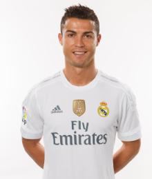
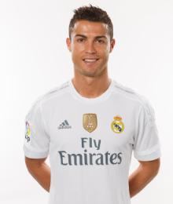

Cristiano Ronaldo
| Estadísticas | |||||
|---|---|---|---|---|---|
| Posición | Foto | Partidos jugados | Asistencias | Goles | Minutos jugados |
| Delantero |  | 15 | 2 | 13 | 1350 |

| Estadísticas | |||||
|---|---|---|---|---|---|
| Posición | Foto | Partidos jugados | Asistencias | Goles | Minutos jugados |
| Delantero |  | 15 | 2 | 13 | 1350 |
"Soy un jugador ambicioso que sólo tiene un fin: la victoria del equipo".
Cristiano Ronaldo tiene cuerda para rato. El portugués se sienta con MARCA una vez que ha recogido su cuarta Bota de Oro. Se le ve relajado y orgulloso. Junto a los trofeos está también su hijo. Echa una mirada a las cuatro botas y deja a su chaval para hablar con calma de lo que ha conseguido desde que empezó, pero sobre todo de lo que está por venir.
"Mi sueño es retirarme en el Real Madrid. Ahora soy un jugador más de área y tengo más instinto goleador".